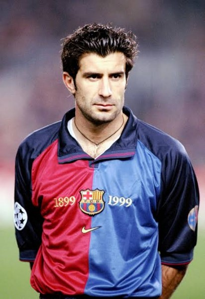

¿Quien es Luis Figo?
Nacido en Lisboa, en el 1972, Luis Figo fue un Futbolista
portugués, considerado como uno de mejores interiores del fútbol
mundial. Luis Filipe Madeira Caeiro, conocido en los medios
deportivos con el sobrenombre de Figo, nació el 4 de noviembre
de 1972 en el hospital São Jorge do Arroios, en Lisboa, como
hijo único del humilde matrimonio formado por António Caeiro,
que regentaba una modesta tienda de ultramarinos en Almada, y
Maria Joana Madeira. Fue un buen estudiante al que se le daban
muy bien las matemáticas, pero pronto tuvo que abandonar los
estudios para dedicarse plenamente a la realización de su sueño:
ser un futbolista mundialmente reconocido. Comenzó a practicar
el fútbol a los ocho años en el Barrocas B, un modesto club del
barrio de trabajadores donde nació. A los diez años pasó al Os
Pastilhas, donde ya llamó la atención de los ojeadores del
Sporting de Lisboa, el buque insignia de su entorno.

Comienzos
A los doce años el pequeño Luis superó las pruebas y se integró
en las categorías inferiores del club lisboeta. Destacó sobre el
resto de sus compañeros y debutó con la selección Sub-16, con la
que en 1989 se proclamó campeón de Europa. Había surgido una
generación de futbolistas portugueses que pronto hicieron
recordar la época del gran Eusébio, y Figo era la estrella más
rutilante. Esa progresión permitió que el 1 de abril de 1990
debutara con el primer equipo del Sporting en partido oficial
ante el Marítimo. Tan sólo tenía diecisiete años. Al año
siguiente se proclamó campeón del mundo juvenil con Portugal. Su
actuación en este torneo y su protagonismo en el Sporting le
valieron para debutar con la selección absoluta en 1992, de la
mano de Carlos Queirós, que fue su entrenador en el Sporting.
Ascenso a la fama
Su gran partido con el equipo lisboeta ante el Real Madrid en la
Copa de la UEFA de 1994 hizo que los dos equipos punteros del
fútbol español se fijaran en él. Jorge Valdano, del Real Madrid,
insistió en su contratación, pero sólo ofrecía 40 millones de
pesetas. No hubo acuerdo y entonces el F. C. Barcelona pujó por
él. Sin embargo, su contratación no fue fácil, porque antes de
que el Barça llamara a sus puertas, Figo había iniciado
gestiones con dos equipos italianos, la Juventus y el Parma,
cosa que le podría haber acarreado una sanción de dos años sin
poder salir del Sporting. Luisito, pues, pasó al equipo
barcelonista casi sin quererlo. Fue una apuesta de Johan Cruyff,
el entrenador del Barça, quien, por 230 millones de pesetas -un
precio nada módico entonces-, contrató los servicios del
emergente portugués para borrar la huella del hasta entonces
ídolo de la afición culé, Michael Laudrup, quien se había
marchado al Real Madrid a causa de las diferencias que mantenía
con el técnico holandés. Figo se hizo pronto un hueco en el
vestuario y un lugar privilegiado en el corazón de la afición
azulgrana, para quienes se convirtió en el portaestandarte del
barcelonismo y en la pieza clave de los triunfos del equipo. En
el F. C. Barcelona siempre dio muestras de su calidad a pesar de
estar a las órdenes de tres entrenadores con estilos muy
diferenciados: Cruyff, Bobby Robson y Louis van Gaal. Con ellos,
el portugués demostró su capacidad para adaptarse a cualquier
sistema de juego. En su etapa barcelonista Figo ganó una
Supercopa de España, dos Copas del Rey, dos Ligas, una Recopa de
Europa y una Supercopa de Europa. En 2000 Figo destacó
sobremanera gracias a su excelente actuación en la Eurocopa de
Naciones, donde en la final Portugal cayó injustamente ante
Francia, con un gol de penalti marcado por Zinedine Zidane,
quien rivalizaría con el portugués en las votaciones para la
elección del mejor futbolista del mundo en el año.
Descenso al olvido
El nombre de Figo copó, el verano de dicho año, las portadas de
los diarios en el ardor de las campañas electorales a las
presidencias del Real Madrid y del F. C. Barcelona. El candidato
madridista, Florentino Pérez, jugó la decisiva baza del fichaje
del portugués, símbolo del barcelonismo, para derrotar a Lorenzo
Sanz, quien, pese a la bancarrota económica, presentaba un
balance deslumbrante en lo deportivo: una Liga y dos Copas de
Europa en tres años. Pérez firmó un precontrato con el
representante del jugador, José Veiga, por el que Figo, previo
pago de su fabulosa cláusula de rescisión -10.000 millones de
pesetas-, ficharía por el Real Madrid si el candidato madridista
salía elegido presidente. El acuerdo tenía una cláusula
adicional que era, cuando menos, curiosa: si alguna de las
partes no cumplía lo pactado, debía indemnizar a la otra con
5.000 millones de pesetas. Esa condición permitió que Florentino
echara un órdago en plena campaña: si yo soy el presidente y
Figo no viene este año al Real Madrid, pagaré [con el dinero que
me dará Figo, debía pensar] los abonos de la siguiente temporada
a todos los socios. En Barcelona, los socios del equipo
azulgrana se frotaron las manos, porque todos los candidatos a
la presidencia del equipo aseguraron, sin aportar pruebas, que
la estrella portuguesa no se movería del Camp Nou. Sin embargo,
Florentino salió elegido, cumplió su contrato y Figo, a quien
Joan Gaspart se negó a dar los 5.000 millones para indemnizar al
Real Madrid, también. El portugués, flanqueado por Alfredo di
Stéfano y por el flamante presidente, posó en plena canícula con
su nueva camiseta, con la que pasaba de héroe a traidor y de
despreciado a idolatrado, según los colores del equipo desde el
que se contemplara aquella compleja operación que marcó un hito
en el mundo de los traspasos, pues fue el más caro de la
historia. La monumental pitada con que Figo fue recibido a su
regreso al Camp Nou con la zamarra del máximo rival sirvió para
que en Madrid aumentara el afecto hacia la estrella humillada y
para acelerar la integración del ex barcelonista en su nuevo
equipo, de la mano de Raúl González. Tras aquel lamentable
espectáculo protagonizado por una afición que se sentía
traicionada en sus más sagrados sentimientos, el asunto Figo se
fue desvaneciendo, pero la herida no cicatrizaría nunca del
todo.
Detalles de su carrera profesional
En enero de 2001, a pesar de que el año anterior Figo no había
ganado trofeo alguno, ni con su club ni con la selección
portuguesa, consiguió el Balón de Oro en reconocimiento a su
fenomenal trayectoria. Tenía ya veintiocho años, y los
franceses, a pesar de que el otro candidato favorito era Zidane
(campeón del mundo y de Europa con la selección), dejaron al
margen su proverbial chauvinismo y se decantaron por el jugador
portugués, que cogía así el testigo de Eusébio, premiado con
idéntico trofeo en 1965. Poco después, Figo fue distinguido, en
Londres, con el premio que otorga la prestigiosa revista World
Sports al mejor jugador del año, en votación efectuada por
Internet. El futbolista portugués se hizo merecedor de otros
galardones: mejor jugador de la Liga 1999-2000, según los
entrenadores de Primera División en España; mejor jugador de
Portugal (1995 y 1996); segundo mejor jugador del mundo, por
detrás de Zidane (2000); mejor futbolista portugués del mundo
concedido por el diario luso A Bola (2001), y personalidad del
año 2001, según la Asociación de Prensa Extranjera en Portugal,
por considerar que era quien más había contribuido a mejorar la
imagen del país en el exterior. En Portugal no dejaba
indiferente a nadie, y hasta el premio Nobel José Saramago, para
halagarlo, declaró: «Yo me siento el Figo de la literatura». Con
unos ingresos sólo por ficha que en 2001 superaban los 1.000
millones de pesetas netas por año y con un contrato hasta 2006,
podía permitirse todos los gustos. Conducía un Porsche negro con
matrícula de Madrid y en 2001 se compró una casa en la
urbanización Parque Conde Orgaz. Figo colecciona relojes y otros
objetos de valor, pero la mayor parte de sus inversiones las
dedicó a inmobiliarias en Vilamoura (Algarve). Vive con Helene
Swedin, una modelo sueca con la que se casó en 2001 y con la que
pronto tuvo una hija, Daniela. Es un cinéfilo empedernido, sobre
todo de películas de acción, comedias de enredo o de cualquier
filme que protagonicen sus actores predilectos: Michael Douglas,
Dustin Hoffman, Michelle Pfeiffer y Carri Ottis. Figo no olvida
sus raíces. Es un hombre solidario que se siente comprometido
con los problemas sociales, detesta las drogas y las guerras. En
2001 salvó a su primer equipo de la desaparición mediante la
compra de un edificio con el que la entidad pudiera avalar un
crédito millonario. Y no renuncia a sus principios: uno de sus
mejores amigos sigue siendo el ex jugador del F. C. Barcelona
Josep Guardiola. Al César lo que es del César y a Figo lo que es
de Figo. También cuando se marchó del Sporting de Lisboa, los
aficionados le tildaron de traidor, pero él sigue siendo un
simpatizante del club. Idolatrado por los seguidores del Real
Madrid y odiado por los del F. C. Barcelona, es sin embargo
admirado por todos los amantes del fútbol en su más puro estado,
debido a su fuerza, regate, visión de la jugada y entrega
absoluta. Tímido, de respuestas monosilábicas, pero célebre por
someterse en el campo a un desgaste físico inusual en las
grandes estrellas, ha encandilado a los aficionados de todo el
mundo con su capacidad para desbordar al adversario y por su
precisión en los pases desde la banda derecha, que le permiten
crear numerosas oportunidades de gol en cada partido.